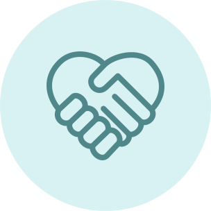
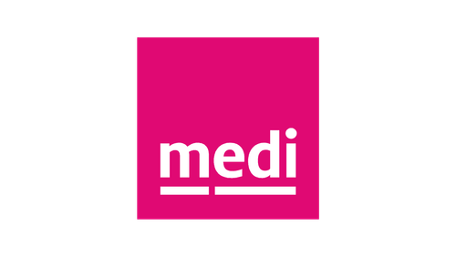
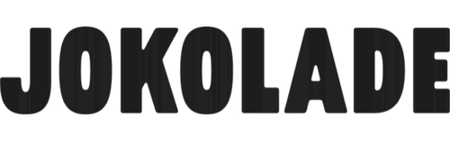

Solo
1 Zugang
299€
pro Jahr
zzgl. MwSt
Jährliche Abrechnung, jederzeit kündbar
Die meisten Gründerinnen und Gründer bauen ihre Organisation entlang von Management-Frameworks aus dem letzten Jahrhundert. Dabei entstehen oft kleine Konzerne. Mit 9 Spaces schaffst du es, eine Organisation neuen Typs zu bauen.

Erfahre, wie du ein Start-up gestaltest, das nicht in alte Konzernmuster verfällt und dabei Wirkung und Wirtschaftlichkeit vereint.
Diese Start-ups arbeiten erfolgreich mit 9 Spaces


Hallo, hier schreibt Martin, Mitgründer von Neue Narrative und 9 Spaces. Ich kenne sehr viele talentierte Menschen, die eine neue Organisation aufbauen und wirklich nur das Beste im Sinn haben. Häufig beobachte ich aber, dass sie am Ende einfach nur kleine Konzerne bauen.
Ich glaube: Organisationen sind ein superwichtiger Veränderungshebel auf dem Weg zu einer menschenzentrierten Wirtschaftswelt. Doch dafür braucht es neue Betriebssysteme, neue (Entscheidungs-)Prozesse und Strukturen, die den Menschen in der Organisation dienen.
9 Spaces ist für alle Gründerinnen und Gründer, die Lust haben, nicht nur ein tolles Geschäftsmodell zu etablieren, sondern auch das WIE des Arbeitens neu zu denken.

Impact erhöhen, Strukturen verbessern und einfach gut zusammen arbeiten. Mit unseren Workshops und Methoden hast du alles, um dein Team oder deine Organisationen zu transformieren.
zzgl. MwSt
Jährliche Abrechnung, jederzeit kündbar
Zugang für mehrere Mitarbeitende in einem maßgeschneiderten Plan